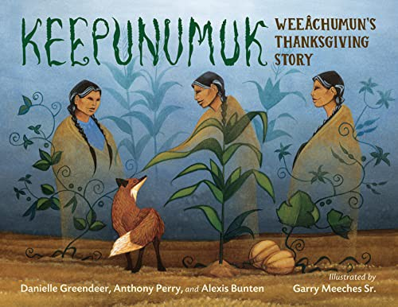

Curated Histories, Biographies, and Lineage Reference
Select a category below to explore recommended titles
This collection wasn't pulled from a bestseller list. Each title earns its place here because it holds up to genealogical and historical scrutiny, whether it's a firsthand chronicle from the 1620s, a rigorously sourced narrative history, or a reference built for the specific work of documenting a lineage.
Purchases made through links on these pages help support the mission and preservation work of the Alabama Society.
Disclosure: As an Amazon Associate, the Alabama Society of Mayflower Descendants earns from qualifying purchases made through links on these pages. That support never changes which books make this list.
New to Mayflower history? Start here with acclaimed narrative histories, bestsellers, and engaging introductions to the Pilgrim story.
Browse Popular Titles → General HistoryComprehensive narrative histories examining the English background, the Leiden years, the crossing, and the growth of Plymouth Colony.
Browse General Histories → Eyewitness RecordsFirsthand accounts, treaties, and journals penned directly by Pilgrims like William Bradford and Edward Winslow during Plymouth's earliest decades.
Browse Primary Sources →
 Separatist Heritage
Separatist Heritage
Religious motivations, Separatist theology, works on John Robinson and Robert Browne, and facsimile editions of the Geneva Bible.
Browse Faith & Theology → Biographical ReferenceExhaustive biographical dictionaries, passenger profiles, and works documenting the lives, origins, and families of the 1620 voyagers.
Browse Passenger Compilations → Lineage AidAuthoritative methodology handbooks, New England record resources, and guidance for documenting direct descent for lineage applications.
Browse Genealogy Reference → Local HeritageFocused local histories of towns where Mayflower families settled, including Duxbury, Marshfield, Scituate, Middleborough, and Cape Cod.
Browse Town Histories → Material CultureStudies of artifacts, probate inventories, colonial domestic architecture, clothing, and the material culture of early New England settlers.
Browse Archaeology & Material Culture →
Indigenous HistoryContextual histories of the Pokanoket and Wampanoag people, diplomatic alliances, and indigenous perspectives on seventeenth-century New England.
Browse Native Perspectives →
 Schools & Families
Schools & Families
Picture books for young readers, middle-grade historical narratives, and hands-on family tree activity journals for children and grandchildren.
Browse Youth & Family Books →